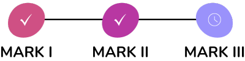

Como seriam suas vidas se tudo que enxergassem
do mundo fosse apenas uma tela preta?
Pensando nessa situação, os
Óculos Sensoriais para Cegos - Synesthesia Vision
buscam proporcionar ao cego autonomia e segurança no seu deslocamento, através do desenvolvimento de uma tecnologia, que é complementar às bengalas, tornando assim sua experiência de vida mais independente e confortável.
A bengala é a tecnologia assistiva mais utilizada pelos cegos por ser segura, barata e também sinalizadora da cegueira. Porém...
Ela tem uma limitação:
Não conseguir localizar obstáculos acima da linha da cintura.
Diante de tudo isso, buscamos investigar o uso da Ecolocalização e do Som Binaural como princípios para o desenvolvimento de óculos sensoriais que possibilitem uma espécie de visão Sinestésica do mundo, ou seja, que permita que a audição seja os olhos de um cego.
Ecolocalização?
Som Binaural?
Sinestesia?
Nos acompanhe abaixo e entenda os conceitos que inspiraram o projeto!
![O que é Sinestesia? É a relação de planos sensoriais diferentes: por exemplo, o gosto com o cheiro, ou a visão com o tato.
O termo é usado para descrever uma figura de linguagem e uma série de fenômenos provocados por uma condição neurológica. Já o Áudio Binaural é um recurso imersivo que
localiza o áudio em volta de quem está ouvindo, simulando como um humano consegue captar os sons naturalmente e saber sua origem. E Ecolocalização é um fenômeno que
consiste na emissão de ondas sonoras para obter informações sobre o ambiente. Ao emitir um som, ele ecoa pelo local até que retorne para o ponto inicial. Assim, realizamos
cálculos para saber a distância aproximada de um canto a outro.](../assets/img/Conceito.png)
Um Histórico da Nossa Evolução
Tivemos até então 3 fases.

Equipe
Conheça a equipe por trás do projeto!